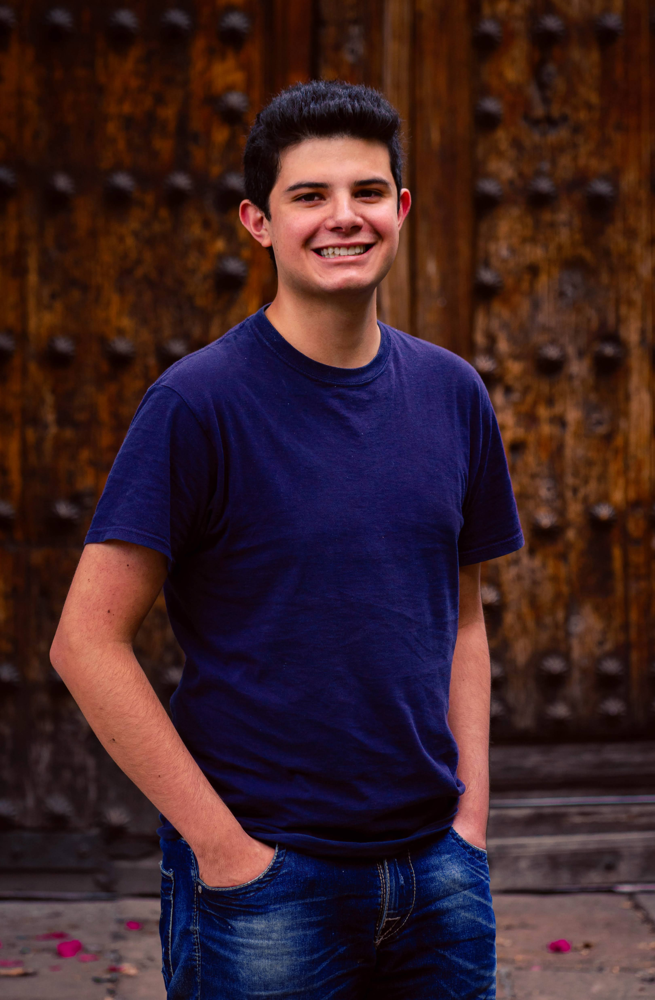

Edrei Barajas | WDD 130

Hello, my name is Edrei Barajas and I'm from Mexico City. I love to play volleyball, watch TV series, and hike. Currently, I work as an MTC instructor and I'm in charge of teaching Preach My Gospel in English with the American missionaries. I love to learn about the web and technology, something that I love is to learn new things and apply what I know. I'm a returned missionary and I was originally assigned to the Ivory Coast Yamoussukro Mission French speaking, but for covid, I was reassigned to the Mexico City North Mission. I love learning new languages, one of my first love languages was French, and I want to continue practicing improving my French and also my English. I learned the Korean alphabet also. but for me is harder than the other languages, so probably in the future, I can continue learning Korean. My favorite thing about everything is learning about space and the universe, one of my dreams is to go on an expedition to the moon. My favorite movie for that reason is Interstellar, which shaped my life so is something that I love. Also when I need to study religion I feel excited to learn more and more about our Heavenly Father's plan for their children and the things that are to come in these latter-days.